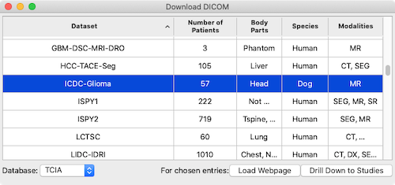
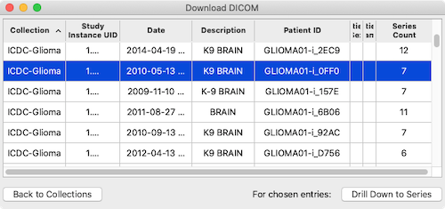
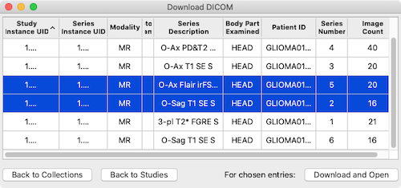
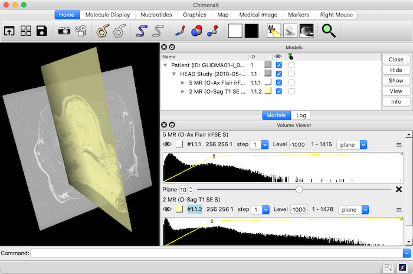

|  |
| ↓ |
|  |
| ↓ |
|  |
| ↓ |
|  |
Download DICOM allows browsing and fetching publicly available medical image data into ChimeraX. It can be started from the Medical Imaging section of the Tools menu and manipulated like other panels (more...). See also: open, DICOM Browser, DICOM Metadata, ChimeraX DICOM Reference
Currently, Download DICOM interfaces with one database, The Cancer Imaging Archive (TCIA):
The Cancer Imaging Archive (TCIA): maintaining and operating a public information repository. Clark K, Vendt B, Smith K, Freymann J, Kirby J, Koppel P, Moore S, Phillips S, Maffitt D, Pringle M, Tarbox L, Prior F. J Digit Imaging. 2013 Dec;26(6):1045-57.
Data hierarchy:
Download DICOM allows traversing the hierachy from collections to studies to series, then choosing series to fetch and open.
One or more rows in the dialog can be chosen (highlighted) by clicking and dragging with the left mouse button; Ctrl-click (or command-click if using a Mac) toggles whether a row is chosen.
Initially, the dialog lists collections. One or more collections can be chosen, and clicking Drill down to Studies will list the studies they contain. The TCIA page describing each chosen collection can be shown with the context menu entry to Load Webpage for Chosen Entries.When the dialog is listing studies, one or more studies can be chosen, and clicking Drill Down to Series will list the series they contain.
When the dialog is listing series, one or more can be chosen to Download and Open. Buttons for navigating back up the hierarchy (Back to Studies, Back to Collections) are provided at the lower levels.
The data are stored locally in ~/Downloads/ChimeraX/tciaDownload/.
{kind=link}
{kind=link}
{kind=link}
{kind=link}